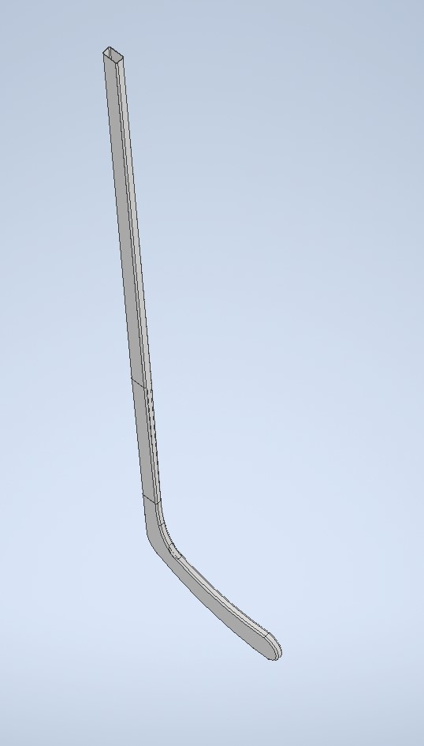

Ice Hockey Stick | Client: Rejects Sports
Tools Used: TinkerCAD
Project Overview: The Ice Hockey Stick project encompasses the complete cycle of designing, developing, and producing a high-performance hockey stick. The goal is to create a stick that offers superior durability, optimal flex, and enhanced power to meet the rigorous demands of competitive play. The project involves detailed CAD modeling, material selection, prototyping, and testing to ensure the stick maximizes player control, accuracy, and comfort. Upon finalizing the design, the stick will undergo production to bring it to market.
Project Objectives
- Achieve High-Performance Design: Develop a hockey stick that enhances shot speed, precision, and handling, tailored to meet players' needs.
- Ensure Durability and Reliability: Select and test materials that withstand impact and maintain performance over time.
- Optimize Flexibility and Balance: Design a flex profile that matches player preferences and optimizes weight distribution for better control.
- Complete Production Cycle: Transition from prototype to full-scale production, ensuring quality control and manufacturing efficiency.
Project Outcomes
Currently in the design and development phases, with expected outcomes including:
- Finalized High-Performance Hockey Stick: A product that has undergone testing and optimization to meet performance standards.
- Successful Production Run: Implementation of a production process that ensures quality, consistency, and reliability.
- Player Feedback and Market Readiness: Collect feedback from current and Former, NCAA and Professional athletes, to refine and position the stick as a competitive product for hockey players